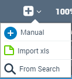
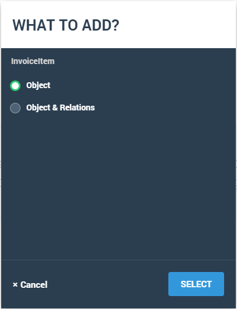

Add Objects via Search
You can add a data model or just objects from business catalogs by using the Search feature.
If you are in the Prototype pages and do not have data, yet, click Go to Data Model, then the search link.
If you are in the Data Editor, click the Add button, then select From Search from the list.

- In the Search for Data Objects screen type the name of
the catalog or objects for which you are searching.

- Select the required object or objects.
- In the next screen, select what you want to add. You can add just the object or
the object and its relations. If you select the object and its relations, you
import the entire data model.
